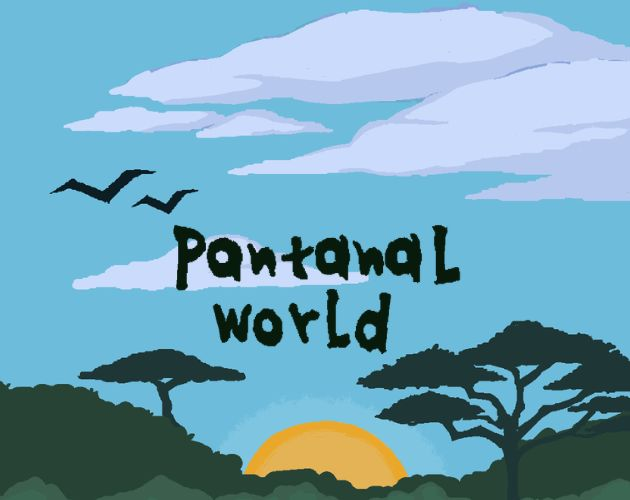
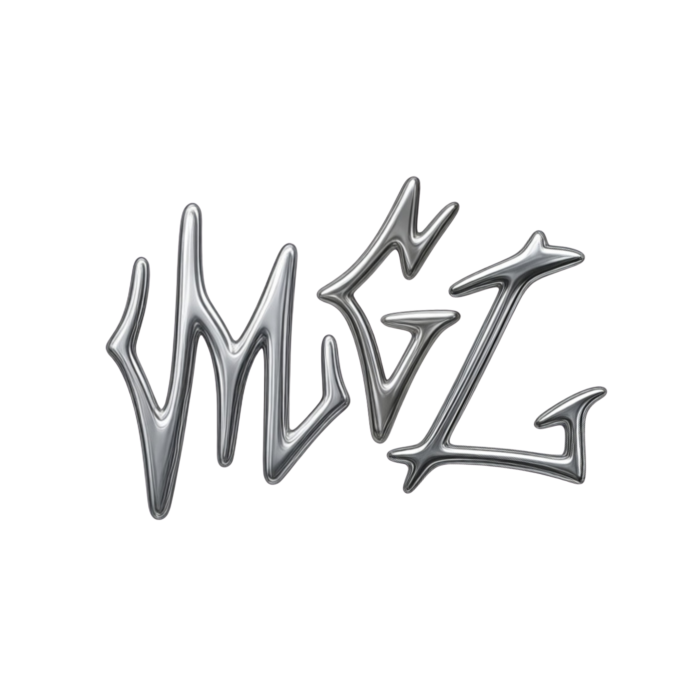
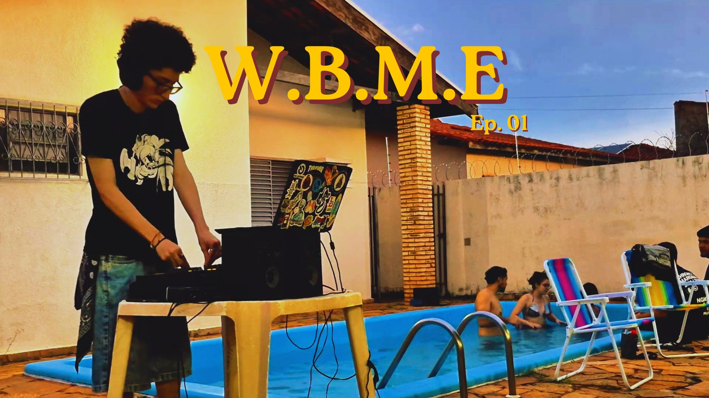
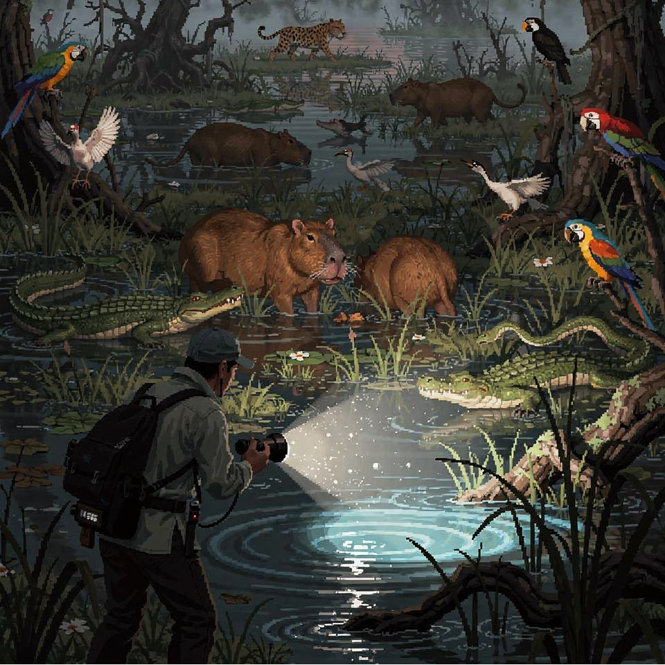
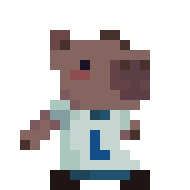
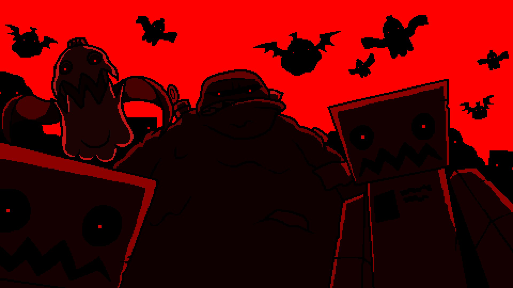

GameMaker · EducativoPantanal World 2D
Jogo educativo de palavras ambientado no Pantanal. Mais de 27 animais catalogados, 3 níveis de dificuldade. Indicado na trilha da COP-15 / INTEGRA 2025. Registrado no INPI.

Sound Design · Música · Pesquisa Acadêmica
quem é M.G.L
Natural de Petrópolis (RJ), sou Game Sound Director, DJ e produtor musical — pesquisador pela FACOM/UFMS e integrante do LEDES. Desde 2021 construo experiências sonoras: trilhas de videogames, sets de House Music e pesquisa acadêmica sobre o processo de criação de áudio para jogos indie.
"A batida não é apenas som, mas combustível e a música, uma forma de salvação."

// Destaques de projetos

GameMaker · EducativoJogo educativo de palavras ambientado no Pantanal. Mais de 27 animais catalogados, 3 níveis de dificuldade. Indicado na trilha da COP-15 / INTEGRA 2025. Registrado no INPI.
 GameMaker · Sound Design
GameMaker · Sound Design
Sound design completo e implementação de áudio para jogo de aventura mitológica. Composição de trilha adaptativa, design de SFX e integração com motor de jogo. Projeto acadêmico pelo laboratório LEDES.

Música · House / Deep HousePrimeiro set gravado do projeto World By My Eyes. House e Deep House em ambiente íntimo.
DJ · Produção · WBME
Desde 2025 em bares do centro de Campo Grande e eventos como a @Lostcg. O projeto WBME — World By My Eyes documenta os sets em vídeo: ambientes íntimos, House clássico de Chicago e Deep House atmosférico.
House e Deep House em ambiente íntimo — primeiro set do projeto.
academia & ciência
TCC sobre produção de áudio para jogos indie, publicações em congressos nacionais e preparação para o mestrado na QUT (Brisbane, AU) em 2027.
TCC · FACOM/UFMS
Investigação sobre o workflow de sound design em contextos independentes — com análise de casos do LEDES/UFMS.
SBSI 2025 · INTERCOM 2026
Artigo aprovado no SBSI 2025 e projetos inscritos na Expocom/Intercom 2026. Pesquisador no LEDES/UFMS desde 2022.
OBJETIVO · 2027
Candidatura à QUT — Queensland University of Technology em Brisbane, com foco em games research e áudio interativo.
vamos conversar
Aberto a colaborações em jogos, sound design, música e para tocar na sua próxima festa.
jogos
Projetos de jogos — como Game Sound Director no LEDES e como desenvolvedor/game designer em game jams. Middleware principal: FMOD Studio com Godot 4.
// Projetos
Jogo educativo de palavras ambientado no Pantanal. Mais de 27 animais catalogados em pixel art — da Onça-Pintada ao Tuiuiú. 3 níveis de dificuldade. Indicado à premiação na trilha da COP-15 no INTEGRA 2025/UFMS. Registrado no INPI (Processo nº BR512025006815-8). Desenvolvido no LEDES + PET Sistemas com GameMaker Studio.
GameMaker · Sound Design
Sound design completo e implementação de áudio para jogo de aventura mitológica. Composição de trilha adaptativa, design de SFX e integração com motor de jogo. Projeto acadêmico pelo LEDES/UFMS.
 GameMaker · Sound Design
GameMaker · Sound Design
Direção de áudio e sound design para jogo com temática cultural. Projeto desenvolvido no laboratório LEDES/UFMS.
 GameMaker · Game Design & Code
GameMaker · Game Design & Code
Ajude a Blueberry a escapar da cozinha malvada e se plantar no jardim! Submissão para a Side Quest 2022 (IFMS). Código de menu, game design e narrativa.
 Unity · Sound Design
Unity · Sound Design
Global Game Jam 2024 no SEBRAE Living Lab. Modificador especial: todos os sons feitos com a boca — músicas, risadas, assobios melódicos e efeitos sonoros. Gravamos uma versão do tema do Mickey (domínio público), mixamos tudo em 3 dias e entregamos pro time. Primeira experiência com sound design, em parceria com Diogo.
 GameMaker · Música · SFX · Roteiro
GameMaker · Música · SFX · Roteiro
Beat 'em Up 2.5D Steampunk-Gótico com elementos Roguelite. Ambientado em Tirana devastada por uma praga, segue Avulli, engenheira mecânica traída pelo governo. Gameplay tático baseado em gestão de Pressão de Vapor. Responsável pela música, efeitos sonoros e roteiro.
// Em Desenvolvimento


EM DESENVOLVIMENTOAventura sandbox/exploração em low poly ambientada no vasto bioma do Pantanal. Construa, descubra segredos e interaja com a fauna local. Texto a confirmar.

EM DESENVOLVIMENTOJogo de gerenciamento e exploração. Texto a confirmar.
Atuação via laboratório LEDES/UFMS. TCC focado no processo de produção de áudio para jogos indie. Objetivo de curto prazo: mestrado na QUT (Brisbane, AU) para 2027 com foco em games research.
// Tags
DJ · Produção · Audiovisual
House Music como paixão, produção como linguagem, WBME como projeto. Três frentes que se alimentam.
Desde 2025 marcando presença em bares do centro de Campo Grande, festas como a @Lostcg e eventos privados. Sets pulsantes guiados pela House Music — a grande paixão.
Mais do que tocar, busco devolver à cena o impacto que a música teve na minha vida: provocar emoção, inspirar movimento e criar conexão genuína.
Produção eletrônica com início em 2021 — do rap à trilha de jogos, agora nas pistas. Setup principal: Ableton 12 Suite e FL Studio.
Projeto musical independente onde exploro House, Deep House e texturas eletrônicas. Sets publicados no SoundCloud desde 2025.
Ouvir no SoundCloud →// Destaque
Primeiro set gravado do projeto World By My Eyes. House e Deep House em ambiente íntimo.
sobre mim
Game Sound Director · DJ · Produtor Musical
Natural de Petrópolis (RJ), atualmente em Campo Grande (MS). Estudante de Sistemas de Informação na FACOM/UFMS, pesquisador no LEDES.
Me chamo Miguel Albuquerque — natural de Petrópolis (RJ), estudante de Sistemas de Informação na FACOM/UFMS e pesquisador no LEDES. Minha relação com a música vem desde pequeno, mas foi em 2021 que comecei a participar na produção de faixas: inicialmente no rap, depois em trilhas sonoras de videogames e, mais recentemente, para as pistas de dança.
Minha trajetória mistura engenharia de software com design sonoro de uma forma que faz todo sentido para quem acha que código e música falam a mesma língua. O laboratório LEDES/UFMS foi o espaço onde consegui unir as duas frentes de verdade, atuando como responsável pelo áudio em projetos de jogos acadêmicos.
"A batida não é apenas som, mas combustível e a música, uma forma de salvação." — M.G.L
Uso FMOD Studio como middleware principal para implementação de áudio em jogos, trabalhando em cima de motores como Godot 4. Já fui responsável pelo áudio de dois jogos: A Odisseia de Teseu e Pantanal World 3D, este último exibido no evento Integra da UFMS. No Pantanal World, construí um sistema de áudio adaptativo completo — máquina de estados de música, hierarquia de voice stealing, design de fauna do Pantanal e um sistema de Listen Mode inspirado em jogos como The Last of Us.
Meu TCC investiga justamente esse processo: o Processo de Produção de Áudio para Sound Design em Jogos Indie, com submissões para a Expocom/Intercom 2026. A próxima meta é tentar o mestrado na QUT (Queensland University of Technology) em Brisbane para 2027, onde a área de games research é forte.
Desde 2025, venho soltando sets no SoundCloud e marcando presença em bares do centro da cidade, além de festas como a @Lostcg e eventos privados. Guiado pela House Music — minha grande paixão —, entrego sets pulsantes que carregam referências dos estilos que moldaram minha trajetória.
Mais do que tocar, busco devolver à cena o impacto que a música teve na minha vida: provocar emoção, inspirar movimento e transformar cada apresentação em um espaço de conexão genuína. Sob o projeto WBME (World By My Eyes), produzo House, Deep House e texturas eletrônicas com Ableton 12 Suite e FL Studio.
Faço parte do PET Sistemas, onde lidero ações de transferência de conhecimento e produção de documentação institucional. No LEDES, contribuo com pesquisa aplicada em jogos digitais, com foco em experiência de usuário e design de áudio. Estou me preparando para a transição para a pós-graduação com foco em games, som e HCI.
academia & ciência
Trajetória no LEDES, TCC sobre áudio em jogos indie e preparação para o mestrado internacional.
Dezembro 2025
Revista Eletrônica do PET · UFMS
Contribuições e Impactos do Grupo PET Sistemas na Última Década. Autores: Amanda Ribeiro, Cauê Almeida, Daniel Santos, Eduardo Souza, Miguel Sobreira de Albuquerque, Maria Istela Cagnin. Ler artigo →
Maio 2025
Simpósio Brasileiro de Sistemas de Informação
Pedagogical and Accessibility Guidelines for Digital Educational Games. Autores: Gilvan Junior, Miguel de Albuquerque, Lucas Borth, Michele Soares, Awdren Fontão, Débora Paiva. Ler artigo →
2025 → presente
Pesquisa científica · Congresso Nacional
Submissão de trabalho científico para a Expocom/Intercom 2026, investigando o processo de produção de áudio para sound design em jogos indie brasileiros. Pesquisa com base em metodologia qualitativa e análise de casos práticos dos projetos do LEDES.
2025
FACOM/UFMS · Sistemas de Informação
Trabalho de Conclusão de Curso com foco no Processo de Produção de Áudio para Sound Design em Jogos Indie. Pesquisa que une conhecimento técnico de engenharia de software com design sonoro interativo.
2024 → 2025
PET Sistemas · Documentação Institucional
Responsável pela criação de documentação técnica completa de produção de podcast para o PET Sistemas. Manual com fundamentação teórica (PMBOK, modelo SECI, Gawande) e referências ABNT — projeto de legado institucional.
2025
Game Jam · Música, SFX & Roteiro
Beat 'em Up 2.5D Steampunk-Gótico com Roguelite. Responsável pela trilha sonora, efeitos sonoros e roteiro do jogo.
2024
SEBRAE Living Lab · Sound Design
Primeira experiência com sound design. Modificador: todos os sons feitos com a boca — tema do Mickey (domínio público), risadas, assobios e SFX. Tudo gravado, mixado e entregue em 3 dias com o Diogo.
2022
Game Jam · IFMS · Primeiro jogo
Primeiro jogo desenvolvido em equipe. Responsável pelo código de menu, game design e narrativa.
2022 → presente
FACOM/UFMS
Participação em atividades de ensino, pesquisa e extensão. Organização de eventos, tutoriais técnicos e transferência de conhecimento para a comunidade acadêmica.
Futuro · 2027
Queensland University of Technology · Brisbane, AU
Objetivo de curto prazo pós-graduação: ingressar no programa de mestrado da QUT (Queensland University of Technology) com foco em games research, áudio interativo e design de experiências sonoras imersivas.
2024 → 2025
LEDES/UFMS · Godot 4 + FMOD Studio
Audio Design Document (ADD v1.1), música adaptativa com state machine, voice stealing, mixing bus dinâmico, design de fauna do Pantanal e Listen Mode. Exibido no evento Integra/UFMS.
2023 → 2024
LEDES/UFMS · Jogo Acadêmico
Sound design completo, trilha adaptativa, design de SFX e integração com motor de jogo.
LEDES/UFMS
LEDES/UFMS · Jogo Cultural
Direção de áudio e sound design para jogo com temática cultural desenvolvido no LEDES.
Futuro · 2027
Queensland University of Technology · Brisbane, AU
Programa com foco em games research, áudio interativo e design de experiências sonoras imersivas.
// Formação
Sistemas de Informação · FACOM/UFMS — Formação com ênfase em engenharia de software, estruturas de dados, banco de dados e IHC. Conclusão prevista 2025.
GitHub: github.com/realmgl
fale comigo
Aberto a colaborações em projetos de jogos, sound design, música, pesquisa acadêmica ou para tocar na sua próxima festa.
Para projetos sérios ou só para trocar ideia — use o formulário ou me ache nas redes abaixo. Geralmente respondo rápido.
Recebi sua mensagem e respondo em breve. Obrigado pelo contato.
IHC · Heurísticas de Nielsen
HEURÍSTICA 01 · NIELSEN
O sistema deve sempre manter os usuários informados sobre o que está acontecendo, por meio de feedback apropriado e em tempo hábil.
HEURÍSTICA 02 · NIELSEN
O sistema deve usar a linguagem do usuário — palavras, frases e conceitos familiares ao usuário, em vez de termos orientados ao sistema.
HEURÍSTICA 03 · NIELSEN
Usuários frequentemente escolhem funções do sistema por engano e precisam de uma "saída de emergência" claramente marcada para sair do estado indesejado.
HEURÍSTICA 04 · NIELSEN
Os usuários não devem ter que se perguntar se palavras, situações ou ações diferentes significam a mesma coisa.
HEURÍSTICA 05 · NIELSEN
Ainda melhor do que boas mensagens de erro é um design cuidadoso que previne a ocorrência de problemas.
HEURÍSTICA 06 · NIELSEN
Minimize a carga de memória do usuário tornando objetos, ações e opções visíveis.
HEURÍSTICA 07 · NIELSEN
Aceleradores — invisíveis para o usuário novato — podem agilizar a interação para o usuário especialista.
HEURÍSTICA 08 · NIELSEN
Os diálogos não devem conter informações irrelevantes ou raramente necessárias, pois competem com informações relevantes e diminuem sua visibilidade relativa.
HEURÍSTICA 09 · NIELSEN
As mensagens de erro devem ser expressas em linguagem simples (sem códigos), indicar com precisão o problema e sugerir uma solução.
HEURÍSTICA 10 · NIELSEN
Embora seja melhor que o sistema possa ser usado sem documentação, pode ser necessário fornecer ajuda.
// Padrões adicionais aplicados
Acessibilidade (WCAG): Todos os elementos interativos têm rótulos aria-label, estados de foco visíveis e contraste mínimo de 4.5:1 nas combinações de cor principais. Imagens decorativas têm role="img" com alt text descritivo. O site respeita prefers-reduced-motion, desabilitando animações para usuários sensíveis a movimento.
Design Responsivo: Layout em grid com breakpoints em 768px para reorganização completa do conteúdo em dispositivos móveis. Header colapsa em menu hamburguer. Tipografia usa clamp() para escala fluida entre tamanhos de tela.
Performance: Imagens carregadas com loading="lazy". Fonte carregada com display=swap para evitar FOIT. CSS usa custom properties para consistência e facilidade de manutenção.